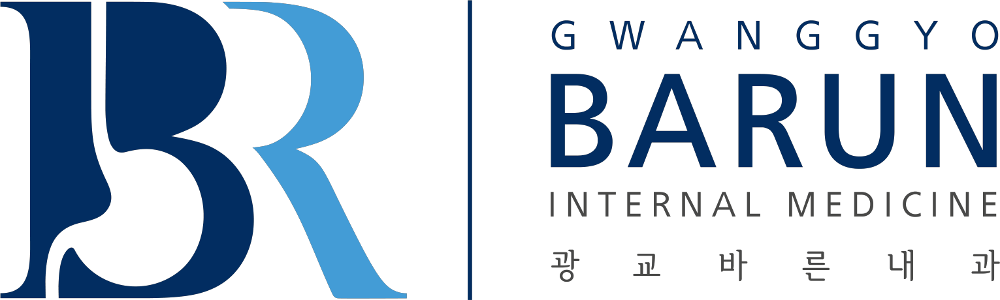
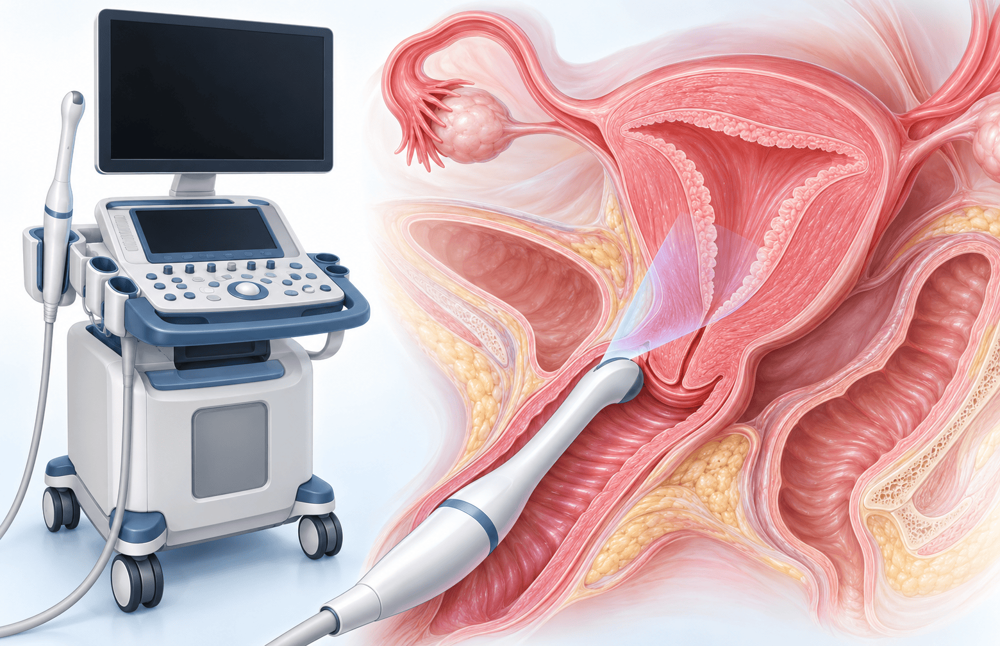

Reproductive
생식기규칙적인 월경주기

검사 · 출혈 평가 · 혈전 위험 · 연자 Q&A의 지속 판단
강의·교재의 NICE NG23 임상 진단 경로와 연령별 검사 선택
| 45세 이상 | 다른 뚜렷한 원인 없이 12개월 연속 무월경이면 호르몬검사 없이 임상적으로 자연폐경을 진단한다. |
|---|---|
| 40–45세 | 폐경 증상과 12개월 무월경을 확인한다. 강의는 진단을 위해 FSH·E2 검사를 시행할 수 있다고 설명했다. |
| 40세 미만 | 폐경 유사 증상과 월경 이상이 있으면 POI 평가로 전환한다. 일반적인 자연폐경과 구분한다. |
교재 STRAW+10 도식의 병기와 진단 시점
이행기의 호르몬 변동과 피임제 사용이 해석에 영향을 준다
이행기에도 간헐적으로 배란이 발생할 수 있다
| 간헐적 배란 | 폐경이행기 중에도 배란이 발생할 수 있어 임신 가능성이 남아 있다. 무월경만으로 임신을 제외하지 않는다. |
|---|---|
| 무월경의 첫 평가 | 가임 가능성이 있는 여성에서는 임신인지 먼저 확인한다. 이행기라는 이유만으로 무월경을 설명하지 않는다. |
| 피임 상담 | 현재 피임 방법과 정확한 사용 여부를 확인하고, 이행기에도 피임 상담을 함께 시행한다. |
소량·일시적 출혈도 자궁내막암 감별의 대상이다
폐경 후 출혈에서 자궁내막 두께와 병변을 함께 본다

초음파·질경검사에서 발견한 병변과 생검 결과에 따른 다음 단계
폐경호르몬요법(menopausal hormone therapy, MHT)의 개별화
호르몬요법 선택지와 비호르몬 선택지를 구분한다
심한 질건조감에는 국소 에스트로겐 병용을 설명했다
고령 여성의 호르몬치료 지속에 대한 연수강좌 질의응답
다음 내용은 해당 질문에 대한 연자의 답변이다
연수강좌 질의응답에서 설명한 지속 판단의 기준
강의 본문과 Q&A의 맥락을 구분해 정리한다
의료진 강의 학습 자료 · QR로 다시 보기